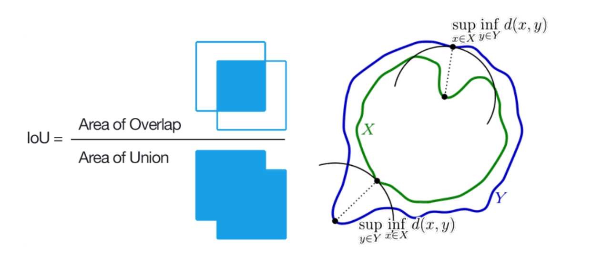
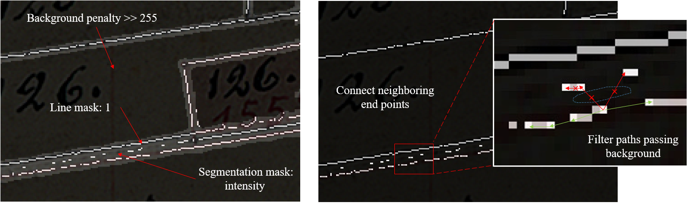

Vectorization of historical cadastral plans from the 1850s in the Canton of Geneva¶
Shanci Li (Uzufly) - Alessandro Cerioni (Canton of Geneva) - Clémence Herny (ExoLabs) - Henrich Duriaux (Canton of Geneva) - Roxane Pott (swisstopo)
Proposed by the Canton of Geneva - PROJ-CADMAP
March 2023 to August 2023 - Published on July 2024
This work by STDL is licensed under CC BY-SA 4.0


Abstract: This project aims to vectorize historical cadastral plans using an innovative AI-driven pipeline. To overcome the complexities of plans manually-crafted by experts, the pipeline uses GIS software, computer vision algorithm and advanced deep learning techniques, such as deformable convolutional networks and vision transformers for automated map topology extraction and vectorization. The process includes removing background noise, deciphering symbols and improving vectorization accuracy using graph-based methods. An optical character recognition model extracts parcel indices and all information is combined in a spatially-referenced vector polygon format. Final vectorization yields a median Hausdorff distance of 3 pixels, while semantic classification of the detected polygons achieves an IoU of 0.98. Although most of the tasks are automated, minor manual corrections are still required to achieve satisfactory results. This semi-automated workflow saves at least 90% of the time required for fully manual vectorization of the entire historical plan. The vectorization of historical plans greatly facilitates the analysis of historical geographical data.
1. Introduction¶
Since the introduction of the Swiss Civil Code in 1912, cadastral plans (Fig. 1) have complied with federal standards for cadastral surveying. Cadastral plans witnessed the evolution of territories since the nineteenth century, providing valuable insights into urban development, land use and social structures. However, their potential remains underused as these handmade paper documents are difficult to store, search and valorize compared to data used with Geographic Information Systems (GIS) nowadays. There is a growing interest in converting cadastral plans into vector data, opening up new perspectives for the community (researchers, administrations, citizens), such as the creation of large-scale geo-historical databases, macroscopic context understanding or the ability to study urban development across diverse landscapes.

Figure 1: Cadastral plan of Geneva in the 1850s: City center.
Vectorization of historical plans is generally carried out manually, using high-resolution scans and GIS software. This work provides an accurate rendering of the plans, but depending on the size, number and complexity, it can be time-consuming and require an excessive allocation of resources.
With growing interest in exploiting the information contained in these plans and the development of new numerical methods, research has been conducted to facilitate the process. Automatic solutions have been developed based on traditional computer vision algorithms such as color segmentation, template matching, shape descriptors or mathematical morphological operators, which can efficiently extract high-level features and produce acceptable initial results123. Recently, hopes have been pinned on deep learning, particularly Convolutional Neural Networks456 (CNN), which are used to perform semantic segmentation to detect topology contours. The developed methods use segmentation algorithms, corner points detection and active contour models to extract closed shapes after CNN processing. Weiwei et al. (2020)7 attempted to align the modern vector map with the georeferenced historical map with reinforcement learning. Finally, Li et al. (2019)8 introduced a novel PolyMapper model with CNN-RNN architecture, which directly generates vector lines or polygon results.
Various attempts to automate the vectorization workflow have validated the viability of these approaches, however, their overall efficiency remains limited92. The primary difficulty is the complexity of the cartographic pattern, which typically exhibits tailored designs aimed at specific objectives, such as roads, buildings or wetlands. The cartographic representation is not always consistent as plans are occasionally generated without strict adherence to the designed ontology, varying from one map to another. Furthermore, potential defects can arise due to pollution or cartographic errors introduced during the production. Besides, current numerical tools cannot proficiently analyze complex scenarios where symbology overlaps.
The objective of this project is to provide a tool to fasten the process of vectorizing raster plans. The Dufour cadastral plans of Geneva from the 1850s were used for this project. The cadastral plans contain a wealth of information, but the priority was given to the vectorization of parcels, buildings, roads, rivers and their respective numerical indices. The vectorization of walls and streams was secondary. The final product is a georeferenced vector map compatible with GIS software. To achieve this, we developed a semi-automated vectorization workflow based on semantic segmentation, computer vision algorithm, graph-based approach and optical character recognition methods.
In this report, we first describe the historical plans and the overall methodology used to process them. Next, we briefly present the annotation method. The semantic segmentation methods used to extract boundaries and object classes and the vectorization approaches tested are presented in detail. Next comes the handwritten index recognition pipeline. All results are finally combined together and vectors are projected to obtain a GIS-compatible map. Finally, we present a conclusion and outlook of the projects.
2. Data¶
2.1 Geneva cadastral plans¶
The Geneva cadastral plan dataset, examples of which are shown in Figures 1 and 2 (left), consists of the Dufour plans dating from the 1850s. Approximately 2,000 paper plans were scanned at high resolution by the Direction de l'Information du Territoire (DIT) of the State of Geneva. Each plan was georeferenced (GeoTIFF) using the Geneva local coordinate reference system. Parcels are represented by closed black shapes and buildings by closed red shapes, with their respective index numbers. Overlaps or omissions of shapes between several cadastral plans are addressed by marking unique areas with thick yellow or red lines, providing a useful indication of the plan assembly.
Figure 2: Cadastral plan (left) and semantic masks (right) of the Geneva dataset.
To proceed with the vectorization, the main objects in the cadastral plans were classified into seven classes (Fig. 2 (right)): (1) unbuilt parcel, (2) building, (3) wall, (4) road, (5) river, (6) parcel borderline and (7) background. Dashed lines representing closed structures were classified as continuous, while those indicating distance were omitted. These classes were used to annotate the map according to the workflow presented in Section 4. In total, eight plans were annotated with a size exceeding 12,000 x 8,000 pixels.
2.2 Lausanne and Neuchatel cadastral plans¶
Historical cadastral plans follow standardized rules. However, these rules and their representation can vary according to the period, the location (urban, rural) and the author of the plan, making it difficult to develop a common vectorization methodology. To assess the generalizability of the developed methodology, the DHLAB (EPFL) provided us with 10 cadastral plans of Lausanne and 10 cadastral plans of Neuchâtel with their annotations.
Figure 3: Cadastral plan (left) and semantic masks (right) of the Neuchatel dataset. The legend of the semantic segmentation is the following: unbuilt parcel - blue, building - red, borderline - white, road - yellow, stairs - green.
These plans, dated between 1827 and 1869, are contemporaneous with the creation of the Geneva cadastral plans. Despite differences in symbology and ontology, they share significant similarities with the Geneva plans, such as the closed black shape for parcels and the red shape for buildings. This suggests a potential for transfer learning between the different datasets. The Lausanne and Neuchatel plans were annotated into six classes (Fig. 3): (1) background, (2) building, (3) unbuilt parcel, (4) road, (5) stair/brick, and (6) borderline.
3. Methods¶
3.1 Global workflow¶
Figure 4: Global workflow for the vectorization of cadastral plans.
Figure 4 illustrates the proposed workflow. The first step was the preparation of the annotated dataset. Then, the workflow branches into three modules, each anchored by a dedicated deep learning approach with neural networks serving different purposes:
- Vectorization of parcel borderlines: The binary semantic segmentation module extracts the borderline mask of the elements in the raster (i.e. parcel, building, etc). The detected borderlines were then vectorized as polygons.
- Polygon classification: The multi-class semantic segmentation module classifies the semantics of the derived polygons based on the classes defined in Section 2.1.
- Handwritten text recognition: the Optical Character Recognition (OCR) module focuses on parcel and building index recognition.
The strategy of performing segmentation tasks with two different neuronal networks was motivated by the observation that segmentation performance degrades with an increasing number of classes10. The design of a dedicated network for borderline detection aimed to optimize topology identification and recovery.
The extracted information, object class and index, was then assigned to the respective polygons and the vectors were georeferenced to produce a vectorial cadastral plan. Finally, the results were evaluated using metrics defined in Section 3.2.
3.2 Metrics¶
Pixel Accuracy (\(PA\)), Intersection over Union (\(IoU\)) and Hausdorff distance (\(d_H\)) were used as metrics to assess the performance of semantic segmentation models and vectorization (Fig. 5).
- Pixel Accuracy: \(PA\) serves as a metric in semantic segmentation, indicating the proportion of accurately classified pixels in an image. It is computed by dividing the sum of correctly classified pixels by the total number of pixels in the image. Specifically, it follows the formula:
\(PA = \frac{\sum_{j=1}^{k} n_{jj}}{\sum_{j=1}^{k} t_j}\) Here, \(n_{jj}\) denotes the total number of pixels classified and labeled as class \(j\), representing true positives for that class, while \(t_j\) stands for the total number of pixels labeled as class \(j\).

Figure 5: IoU (left) and Hausdorff distance (right) definitions.
- Intersection over Union：The \(IoU\) assesses the accuracy of a segmentation model by quantifying the overlap between predicted and ground truth masks for each class. The \(IoU\) provides a balanced evaluation, taking into account both false positives and false negatives. Its strength lies in its robustness, especially in scenarios where the distribution of classes is unbalanced. Mathematically, it is defined as follows:
- Hausdorff distance：The \(d_H\) evaluates the dissimilarity between vector polygons by measuring the greatest distance between a point on one polygon and the nearest point on the other, considering both directions. This metric is effective for precise boundary delineation, capturing shape variations, distortions, and local deformations. Sensitivity to outliers is a notable aspect, as a single distant point can significantly affect the result. Although computationally intensive for complex polygons, its detailed insights into shape similarity makes it a valuable metric for evaluations requiring accurate boundary representation. Mathematically, \(d_H\) between two sets of points \(X\) and \(Y\) can be defined as follows:
The \(IoU\) is computed for both the semantic segmentation and the final vectorized polygons, together with the model's performance in terms of pixel accuracy. During the process of binary semantic segmentation for the borderlines extraction, the \(IoU\) is relevant for the topology retrieval. However, it is neither linearly positive nor deterministic. The main goal was to detect the existence of the line, not to accurately recover all the borderline pixels.
The Hausdorff distance is only applied to the final vectorized results, as it represents the geometry-level accuracy. Absolute distance in meter is obtained after vector projection.
4. Annotation¶
Ground truth labels in raster format of the defined classes are required to train and evaluate supervised deep learning networks.
Cadastral plans do not have distinct textures for the objects depicted, making it difficult to interpret closed shapes without global topology information. For example, on the cadastral plan of Geneva, it can be difficult to distinguish roads, unbuilt areas, and river centers based on texture alone. The vectorization of cadastral plans requires not only visual interpretation but also high-level semantic understanding of topology.
However, previous studies10 on annotation strategies of cadastral plans emphasized the importance of limiting annotations to visual properties of the objects such as color, texture and morphology. This designation aims to be consistent with the neural network method for object identification and categorization, which are not capable for topology recognition yet. Therefore, the following guidelines were concluded:
- Annotated objects must be comprehensible and classifiable based on visual attributes alone, without consideration of latent semantics.
- Objects belonging to a semantic category should have distinctive visual characteristics within their class and share reasonable visual features in order to be grouped.
- Minimize the number of semantic categories.
- Maintain uniformity of annotations across instances.
- Take an iterative approach; validate preliminary results and add additional data if necessary.
Annotation of the raster plans was performed using ArcGIS Pro and Photoshop, following the workflow presented in Figure 6. First, the borderlines were vectorized to create a dedicated borderline layer and a classified polygon layer. The layers were then converted to raster masks. This vector-based approach facilitates the process of annotating and editing the label raster.
Figure 6: Annotation workflow: (a) initial cadastral plan, (b) polyline annotation,
(c) buffered borderline polygon, (d) plan object polygons, (e) merged vector masks, (f) rasterized masks.
Annotation speed correlates with plan complexity; rural areas required 4 to 6 hours per plan, while urban areas required 2 to 3 times as much effort. After generating ground truth labels, the high-resolution plans and labels were divided into tiles of 1024 x 1024 pixels to reduce the GPU memory cost, as input for training semantic segmentation models.
5. Semantic segmentation¶
To achieve the semantic segmentation task, we investigated the performance of different networks. The dhSegment segmentation network was adopted as a baseline, but note it relies on the Unet architecture, which is not the current state-of-the-art. The InternImage framework, using deformable convolution to improve receptive fields and achieve comparable performance while not being as data-hungry as transformers, was adopted for this project. Compatible with conventional CNNs, we chose UperNet11 as the backbone, which excels at capturing both fine details in images and broader contextual understanding by integrating features from different levels of a convolutional network. In addition, Segformer, a transformer-based segmentation network with Multi-Head Self-Attention (MHSA) for global information capture was also tested12.
Data preparation and requirements:¶
- 8 maps were selected and split into training (6), validation (1), and test (1) sets
- The high resolution of the original cadastral map challenges GPU memory requiring an image resizing. Training image dataset were cropped to a size of 1024 x 1024 px.
- InternImage framework requires 512 x 1024 input due to GPU constraints.
- NVIDIA V100 32GB GPUs limit the batch size to 2 for Segformer and UperNet models.
- Because of high resolution, inference on a complete map uses sliding windows for patch-wise prediction, followed by concatenation.
Performance enhancement:¶
- Random data augmentation (rotation, flipping, resizing, photometric distortion) boosts model adaptability to diverse lighting, contrast, and color scenarios.
Optimization:¶
- AdamW optimizer was chose for stability and convergence in neural networks.
- Incorporates weight decay, restrains weight growth, and sustains adaptive learning rate features.
- Prevents overfitting and improves overall training efficiency.
- 160,000 iterations (batch size 2) on Segformer architecture with 4 NVIDIA V100 take approximately 24 hours. The best mIoU occurs on iteration 72,000.
5.1 Binary semantic segmentation¶
A binary semantic segmentation module is dedicated to the extraction of object borderlines, mitigating interference from other annotated classes10 (Section 4). Model capabilities were evaluated through several numerical experiments with networks based on dhSegment or InternImage using Segformer or UperNet architectures, trained on the Geneva dataset. The transfer learning potential was assessed by training a model on the Lausanne-Neuchatel dataset and then applying it to the Geneva cadastral map for a zero-shot scenario. A fine-tuning scenario was also tested, involving a two-step process of pre-training a model on the Lausanne-Neuchatel dataset and fine-tuning the model on the Geneva dataset. The aim was to enhance segmentation performance by leveraging an enriched dataset.
5.1.1 Quantitative analysis¶
| Model | In domain (Geneva dataset) | Transfer learning (zero-shot) | Transfer learning (fine-tuned) |
|---|---|---|---|
| dhSegment | 0.645 | Not tested | Not tested |
| Segformer | 0.711 | 0.622 | 0.721 |
| UperNet | 0.732 | 0.649 | 0.734 |
Table 1 summarizes the IoU metrics for the different networks tested. For models trained solely on the Geneva dataset, UperNet achieves an IoU of 0.732, outperforming Segformer by about 3% and dhSegment by about 13%. In the transfer learning scenarios, UperNet slightly outperforms Segformer by about 4% for the zero-shot case but show similar results for the fine-tuned case. Overall, the performance of UperNet and Segformer are close, with UperNet slightly outperforming. The transfer learning with a zero-shot model provides IoU about 10% lower than in domain model while the results are slightly above when the model is fine-tuned with Geneva data.
5.1.2 Qualitative analysis¶
- dhSegment: As a baseline model, the dhSegment successfully captures most of the line features (Fig. 7), which is essential for the next step of topology extraction. However, it struggles with the Geneva dataset due to challenges like vegetation blending with the borderline, leading to false positives. Issues arise as well from text overlap and closely adjacent lines, impacting accurate topology detection.
Figure 7: Example of results obtained with the dhSegment model trained on the Geneva dataset: Input cadastral map tile (left); Borderlines ground truth (middle); Borderlines model predictions (right). Some predictions issues are outlined with the red boxes. It includes detection of vegetation features (largest box), text overlapping border line (upper right box) and closely adjacent lines (lower right box).
- Segformer and UperNet: Consistently with similar IoU metrics (Table 1), both networks exhibit similar qualitative performance (Fig. 8) and outperform the dhSegment model. These models consistently produce accurate predictions for borderlines, effectively reducing noise impact from text and other patterns.
Figure 8: Comparison of borderlines predictions obtained with Segformer (a, c) and UperNet (b, d). Some predictions issues are outlined with the red boxes.
Segformer and UperNet show an enhanced comprehension of complex background object patterns compared to dhSegment. The integration of an advanced network architecture addresses the limitations of the dhSegment model, surpassing initial expectations by distinguishing between desired and undesired dashed lines based on manual annotations. While defects emerge when conditions are not ideal, such as red borderlines with insufficient color depth (Fig. 9), the overall outcome remains promising for proceeding with the vectorization module.
Figure 9: Examples of defects encountered with borderline prediction outlined with red boxes:
(a) several adjacent lines; (b) false negatives - topology broken;
(c) polluted document; (d) false positives for graticule line.
Figure 10: Comparison of predictions performed on the Geneva dataset with different framework.
(a) Ground Truth; (b) dhSegment; (c) Segformer; (d) Upernet
Figure 10 compares the model performance. Both Segformer and UperNet demonstrate versatility and competitiveness in all scenarios. Ultimately, UperNet is selected for the binary semantic segmentation module due to its superior performance (mean IoU).
5.1.4 Discussion on models performance and connectivity¶
The best mIoU of Segformer and UperNet are obtained at 72,000 and 98,000 iterations respectively. While Segformer's transformer architecture and broader MHSA theoretically imply superior performance, UperNet achieves slightly better metrics (Table 1). This might be due to UperNet's optimized streamlined architecture and the integration of deformable convolution. Segformer's performance may be hindered by the limited dataset size, which consists of only 6 cadastral plans with approximately 400 patches.
IoU is a comprehensive metric for line segmentation, but maximizing it does not guarantee optimal historical plan vectorization. The segmentation module aims to detect lines regardless of width, prioritizing connected topology. The default decision threshold of 0.5 for binary classification may not be optimal, lowering it enhances connectivity and topology, but may result in more false positives. Adjusting the threshold affects the prediction area, line thickness and connectivity. Lower threshold is more consistent to preserve topology information, but adjacent line predictions may merge. The challenge of adjacent lines persists despite adjustments.
Transfer learning does not significantly improve segmentation performance. However, the zero-shot model trained on the Lausanne-Neuchatel data achieves performance close (around 10% less) to that of the in-domain and fine-tuned models, making it possible to use the model for other datasets without the time-consuming task of acquiring an exhaustive ground truth.
5.2 Multi-Class semantic segmentation¶
To perform the multi-class semantic segmentation task we opted for an adaptation of the models designed for the binary semantic segmentation. Models, Segformer and UperNet, were trained with multi-class annotated plans (Section 4).
In the context of the non-uniformity of the semantic classes and the variations in the cartographic ontology between the different cadastral plan datasets, the application of transfer learning for multi-class semantic segmentation was not relevant.
Both, Segformer and UperNet models, perform well at classifying pixels with semantic classes (Fig. 11) reaching a mean pixel accuracy of about 0.855 and a mean IoU of about 0.776 (Table 2).
| Segformer - iteration 60,000 | UperNet - iteration 108,000 | ||||
|---|---|---|---|---|---|
| Class | IoU | PA | Class | IoU | PA |
| Background | 0.996 | 0.999 | Background | 0.997 | 0.998 |
| Borderline | 0.694 | 0.723 | Borderline | 0.710 | 0.746 |
| Building | 0.879 | 0.887 | Building | 0.892 | 0.901 |
| Unbuilt | 0.937 | 0.997 | Unbuilt | 0.939 | 0.997 |
| Wall | 0.449 | 0.602 | Wall | 0.506 | 0.647 |
| Road | 0.752 | 0.772 | Road | 0.743 | 0.757 |
| River | 0.713 | 0.979 | River | 0.663 | 0.986 |
| aPA | mIoU | mPA | aPA | mIoU | mPA |
| 95.3 | 0.774 | 0.851 | 0.954 | 0.778 | 0.862 |
PA: Pixel Accuracy mPA: mean Pixel Accuracy of all classes aPA: all Pixel Accuracy
In particular, the performances obtained for the "Background" and "Unbuilt" classes are excellent, with a mean pixel accuracy greater than 0.99. The "Wall" class, on the other hand, performs less well, with a mean pixel accuracy between 0.60 and 0.65 and a mean IoU between 0.45 and 0.50. This can be explained by "Borderlines" predictions invading "Wall" pixels, since these elements are often adjacent and close in distance (Fig. 12). Besides, similar textures in "Roads", "Unbuilt" areas and middle parts of the 'River' classes complicate classification.
Figure 11: Example of multi-class semantic segmentation predictions (left) and ground truth (right) on a cadastral plan of Carouge.
With sliding-window inference, the fixed input size of the model limits the prediction to solely rely on the current patch, while the global information from a larger scope can not be accessed. According to the comparative study carried out between the two models and despite the theoretically better capabilities of the Segformer model, UperNet performs slightly better by about 1% overall in mIoU and pixel accuracy for all classes except the "Road" class (Table 2).
Segformer peaks at 60,000 iterations, while UperNet achieves the best mIoU at 108,000 iterations. This might suggest that Segformer converges faster, but faces underfitting issues leading to not exploiting the full capacity of the model.
For these reasons, and to be consistent with the choice made for binary semantic segmentation, we selected UperNet to perform multi-class semantic segmentation.
6. Vectorization¶
6.1 Strategy¶
Binary segmentation rasters are used as input for the vectorization of the cadastral plan objects. The main elements to be vectorized are parcels, buildings, roads and major rivers. Objects such as walls and streams (Fig. 12) are secondary.
Figure 12: Second priority objects. Left: streams with blue color; Right: walls represented by adjacent black and red lines.
The accuracy of the vectorization depends on the quality of the raster masks and defects (Fig. 9) can be a source of challenges:
- A first concern is the vectorization of noise/pollution or undesired elements. Pollution is rare in the Geneva dataset. For example, graticule lines will result in polygons during the vectorization process that are not relevant to the project.
- A second problem concerns adjacent lines. In particular, wall parcel and building lines can lead to connected pixels in the binary semantic segmentation raster (Fig. 9a). During the vectorization process, these lines can result in a large number of false negative polygons, which affects the accuracy of the vectorized topology.
One solution to mitigate both of these problems is to lower the decision threshold for binary semantic segmentation, resulting in wider borderline prediction.
Recent research shows that the delineation of the raster mask can be performed using different strategies:
- Image segmentation;
- Corner points detection;
- Graph-based approach.
Figure 13: Test results with watershed (a, c) and felzenszwalb (b, d) algorithm for cities (a, b) and rural (c, d) areas.
The image segmentation strategy uses algorithms such as watershed13 and Felzenszwalb14. However, these algorithms do not perform satisfactorily in our case (Fig. 13). They are challenged by intricated object topologies, like roads, and are affected by segmentation mask noise, resulting in false positives. For these reasons this approach was excluded.
The other two strategies involve converting raster mask to one-pixel-wide raster lines through skeletonization:
- Corner points detection identifies points to generate vector output, focusing on preserving critical points rather than capturing every detail1.
- Graph-based approach comprehensively vectorizes all intricacies, closely matching the ground truth151617. It could help to solve the problem of untangling adjacent lines in the binary segmented mask and allow to vectorize walls.
We adopted a vectorization strategy based on a one-pixel-wide skeleton delineation from the borderline masks, followed by vectorization into polylines and finally polygon transformation. To address different levels of object vectorization details, two delineation methods, an elementary one (Section 6.2) and a sophisticated one (Section 6.3) were developed.
6.2 Elementary delineation method¶
The global workflow of the elementary delineation method is summarized by Figure 14.
Figure 14: Elementary method pipeline: (a) cadastral map, (b) binary semantic segmentation result, (c) completed mask, (d) skeletonized mask, (e) vectorized topology, (f) topology simplification, (g, h) vectorized samples.
Skeletonization of borderline masks surrounding a small area of background pixel can lead to meaningless polygons after vectorization. This is especially the case with semantic segmentation of adjacent lines (Fig. 14b). To prevent this, mask completion, converting small area of background pixels to mask pixels (Fig. 15) was implemented based on Connected Component Analysis (CCA) and adaptive filtering before proceeding to skeletonization.
6.2.1 Mask completion¶
- CCA: CCA, a key image processing technique, detects connected regions in binary images. In the case of the borderline masks, connected components denote foreground regions with shared connectivity through neighboring pixels. The algorithm assigns unique labels to these foreground components, while assigning a single label to background pixels. In Figure 15, two CCA iterations invert the foreground and background, ensuring accurate elimination of both small false positive and false negative regions.
Figure 15: Mask completion of the binary mask (left) performed with Connected Component Analysis and adaptive filtering (right).
- Adaptive filtering: After collecting data on connected component positions and statistics, a region-specific pixel threshold is essential to eliminate small regions that would generate meaningless polygons. Figure 16 illustrates the stable statistical distribution of the CCA with the x-axis representing the region pixel counts and the y-axis representing the count of these regions. The power law distribution, highlighted by the smoothed curve of the distribution, places regions of interest at the tail of the distribution and the small region area at the head of the distribution. The optimal threshold for the dominant borderline mask is defined as the knee point determined by the curvature or second derivative, as it is representative to split the head and tail of the distribution.
The threshold value depends on the location and scale of the cadastral plan; urban plans display a lower threshold than rural ones. The adaptive filtering with knee point on pixel statistics automates this process to minimize manual intervention.

Figure 16: Distribution of connected component on the borderline mask. Dark blue curve corresponds to the smoothed distribution and the dashed blue line to the knee point detection.
The mask completion enhances the borderline mask topology, essential for accurate vectorization. Aligning the vector line at the center of the raster line mask area is not feasible with this approach. However, it excludes intricate semantics consisting of thin or small topology like walls and streams.
6.2.2 Skeletonization¶
The completed borderline masks, with lines that can be several pixels wide, serve as input to a skeletonization algorithm that performs a morphological operation to obtain a one-pixel-wide line (Fig. 14d) suitable for vector conversion.
6.3 Sophisticated delineation method¶
A more sophisticated approach was also explored to tackle the complex task of identifying small objects and accurately delineating boundaries, especially when adjacent lines are encountered (Fig. 15, left). One possible solution would be to use technology such as super-resolution to better separate adjacent lines into distinct topological objects. However, relying on improved resolution alone is not promising, as augmented information remains relatively scarce. Therefore, our strategy is to re-examine the image pixels and explore algorithms from traditional computer vision that are more robust to this task than neural network methods.
Figure 17: Sophisticated method pipeline: (a) cadastral map, (b) Laplacian operator, (c) connect endpoints, (d) defects with ground truth and T-junction outlined in red, (e) connect with potential links, (f) vectorized polygons.
The global vectorization workflow using the sophisticated delineation method is summarized by Figure 17 and the delineation methodology is explained in the following paragraphs.
6.3.1 Delineation¶
Applying delineation algorithms directly on the original cadastral plan resulted in undesirable closed shapes due to background noise and intersections of text with borders (Fig. 18b). The use of the completed borderline mask enabled to isolate the areas of interest to be vectorized in the cadastral plan filtering out some background noise and facilitating the extraction of boundary topology (Fig. 18c).
Figure 18: Delineation and masking of the sophisticated method: (a) cadastral map, (b) edge detection, (c) filter noise with completed borderline mask, (d) Canny detector with intensity, (e) Sobel operator, (f) Laplacian operator.
In pursuing one-pixel-wide raster lines with delineation algorithms, the Canny edge detector, though employing non-maximum suppression, identifies two edge pixels for a single borderline. To address this, a modification incorporates the unique statistical characteristic of deep black or red center pixels representing local minimum in intensity within the gradient direction, resulting in accurate borderline delineation (Fig. 18d). While the modified Canny detector effectively identifies central pixels, it disrupts raster line connectivity and produces false positives in the background (Fig. 18d).
To overcome this, Sobel and Laplacian operators, both employed with non-maximum suppression from Canny detector, are introduced for delineation (Fig. 18e, f). After fine-tuning and evaluation, the most promising outcome is achieved using the Laplacian operator following manual assessment.
6.3.2 Graph-based endpoints connection¶

Figure 19: Graph weights assignment (left) and visualization of connecting endpoints (right).
To improve the continuity of the delineation produced by the Laplacian operator, we developed a graph-based algorithm (Fig. 19, left). It detects endpoints using a specialized convolution kernel, ensuring that each endpoint has a single adjacent line pixel. Pixels become nodes in a directed graph with assigned weights. Negative pixels in the segmentation mask incur a high background penalty (> 255), pixels of the delineated lines have a weight of 1, and the rest follow the intensity values. This weighting facilitates the connection of adjacent endpoints along the shortest path, thus completing the missing part of the line mask. False positives are addressed (Fig. 19, right) by ensuring that the shortest path crosses positive pixels of the line mask and those with minimal intensity between endpoints, while avoiding bright background pixels. Undesirable connections (red arrow) were filtered out by thresholding the highest pixel intensity on the path.
6.3.3 Active contour on endpoints¶
Despite the improved continuity of the borderline masks with connections between endpoints (Figs. 17a, b, c), issues persist at T-junction, hindering the topology recovery. Ground truth defects, such as parcel boundary disconnection, remained unaddressed. A dedicated graph-based method, addressing the defect depicted in Figure 18d was developed to identify connecting pixels by searching nearby candidates, mitigating defects with additional connections (Figs. 18e, f).
6.4 Raster to vector conversion¶
The same raster to vector conversion method was used for the results of both delineation methods (Figs. 14g, h, 17f). ArcGIS Pro tools were used to convert the skeletonized raster to polylines and then to polygons. The output vectors have a wavy shape while borderlines in cadastral plans are straight lines. To improve the quality of our results, a topology simplification algorithm (Visvalingam-Whyatt available in ArcGIS Pro) was applied. It iteratively removes insignificant vertices based on triangle area offering flexibility in retaining critical points, bends or effective areas. Smoothed polygons satisfactory aligned with the ground truth (Table 3).
With both methods, intricate small semantic objects such as walls and streams were omitted or resulted in disordered topologies. In addition, with the sophisticated method, some polylines lost small parts due to ground truth defects that prevented the formation of closed polygons. However, since most of the polylines were satisfactory detected, a limited manual correction, including segmentation of single map areas, removal of error detection and annotation of missing geometry was performed to improve significantly the results (Table 3). These corrections were performed after raster line vectorization but before the polygon construction.
6.5 Method evaluation and discussion¶
6.5.1 Quantitative analysis¶
Note that the vectorization results presented in Table 3 were assessed with metrics after the manual rectification mentioned in (Section 6.4).
As there might be missed or extra detected polygons, only polygons with an IoU above 0.7 were retained for evaluation. Ambiguities in ground truth annotation of the cadastral plans can lead to outliers with high Hausdorff distances, but these are not necessarily errors. To mitigate this, mean IoU and median Hausdorff distance were relied upon for evaluation.
| Method | Number of detected polygons | Mean IoU | Median Hausdorff distance (cm) |
|---|---|---|---|
| Elementary | 199 | 0.979 | 11.7 |
| Sophisticated | 202 | 0.971 | 13.3 |
The elementary and sophisticated delineation methods perform equally well. They detect 89% and 91% of the polygons of the ground truth, respectively. The mean IoU exceeds 0.97 in both cases. The median Hausdorff distance is slightly higher, about 14%, for the sophisticated method than for the elementary method, but translates to 3 pixels for both on the raster cadastral map.
6.5.2 Qualitative analysis¶
Figure 20: Vectorization (cyan lines) defects obtained with elementary and sophisticated delineation methods are highlighted with red circles. Vectorized boundaries are not perfectly aligned with the black parcel line (left) and dashed lines are missed and undesired polygons are generated (right).
A qualitative assessment reveals the strengths and weaknesses of both delineation methods (Fig. 20). The elementary method excels in identifying polygons but lacks seamless boundary alignment and struggles with small object detection. The sophisticated method improves boundary alignment but struggles with dashed lines, creating meaningless polygons.
6.5.3 Discussion¶
A manual correction of the vectorized lines is required to obtain satisfactory polygons. We evaluated the time and effort required for this manual correction compared to a full vectorization of a cadastral plans. For a countryside plan of Geneva, full manual digitization takes about 6 hours. The elementary delineation method requires 20 minutes for correction, while the sophisticated method requires twice as much time. Therefore the hybrid approach, involving algorithm results and manual correction, permits to save at least 90% of manual work compared to a fully manual approach.
Both methods perform well for simple plans, but the sophisticated delineation method is required for city center maps if accurate topology is desired and dense walls exist.
7. Index recognition¶
In the cadastral plans, parcels and buildings are indexed with handwritten numbers (Fig. 2, left). EasyOCR, an Optical Character Recognition (OCR) model, was used to identify index numbers in the Geneva cadastral plans. The tool uses pre-trained models, with printed text for over 70 languages, to automate text recognition from images and scanned documents.
Figure 21: Automatic text recognition with EasyOCR on part of a Geneva cadastral plan. Recognized text is surrounded by a blue bounding box with a confidence score. The parcel index is written in black and the building index in red.
Figure 21 depicts the results of the EasyOCR's pre-trained model on a cadastral plan of Geneva. For this plan, text recognition achieved an accuracy of about 90%, with minor fusion anomalies in adjacent regions. However, recognition accuracy varies from plan to plan and can produce unsatisfactory results. The main error identified is the misidentification of the digits 1, 4, and 7, which is attributed to their similarity in the style of the author. Globally, the performance of the pre-trained OCR model for our project is not robust yet.
The variation in performance is attributed to the fact that the EasyOCR model was trained on printed text datasets, while the plans were drawn with different handwriting styles. Despite community support in providing input material for model training, text accuracy depends on image quality, font and language complexity. Verification of the extracted text, especially for handwritten content, is required after inference with a pre-trained model. Improvement in text recognition can be achieved by fine-tuning the model with a customized dataset. This task was not performed in the current project due to time constraints but is considered for future development.
8. Combination of results¶
8.1 Assignment of semantic classes and indexes¶
Digitized cadastral plans, multi-class semantic segmentation rasters, text recognition rasters, and vectorized polygons were first displayed in the same coordinate system (Cartesian plane with origin (0, 0) at the bottom left) to perform spatial comparison.
Figure 22: The results of semantic classification and text recognition are associated with the respective polygons as attributes.
Polygon classification was determined using a majority voting approach, i.e. the majority class of pixels within the polygon that overlaps the multi-class raster determines the polygon class. With this approach, there is only one false prediction in both city center (223 polygons) and rural area (122 polygons) scenarios, supporting the effectiveness of polygon classification.
The index is assigned to the polygon overlapping the text recognition bounding box. In the cadastral plans, each parcel has a unique index written in black and each building has a unique index written in red. Buildings contain both the building index and the associated parcel index. To differentiate the indexes, color statistics analysis was performed on the red channel in text regions. In the case of regions with multiple texts in a polygon, the final vector results were determined based on confidence scores, as shown in Figure 22.
8.2 Georeferencing¶
Figure 23: Georeferencing of generated polygons in the Geneva local reference coordinate system.
Finally, the vectors were georeferenced in the Geneva local coordinate system to produce the desired vector map of the Geneva's historic cadastral plans (Fig. 23). This was achieved by applying an affine transformation, determined from at least three control points, to the generated vectors. The Affine library, which handles non-zero rotation parameters, was used.
9. Conclusion¶

Figure 24: Vectorization of cadastral plan workflow.
We developed a pipeline to perform the vectorization of historical plan with the help of AI methods. Figure 24 outlines the developed workflow:
- We elaborated a comprehensive method for annotating the cadastral plan with ground truth in raster and vector format, which can be generalized to any historical image dataset.
- We built a prototype to automatically vectorize cadastral plans. Binary and multi-class semantic segmentation is performed using neural network. A model trained with in-domain data is used for borderline extraction and parcel classification. Besides, a graph-based approach is adapted to improve vectorization performance. Automated vectorization is followed by manual correction for topology extraction.
- We used an open-source text recognition framework to detect parcel and building indices.
- Finally, the vectorization pipeline is completed by combining the extracted information and georeferencing the vectorized plans.
The pipeline achieves accurate vectorization with around 90% of polygons detected with an average IoU of 0.975 and a Hausdorff distance of around 3 px (12 cm). However, fully automated vectorization of historical cadastral plans remains a difficult task, even with the help of artificial intelligence techniques. Indeed, manual intervention is always necessary. Nevertheless, the hybrid method enables a significant reduction in workload of over 90%.
This exploratory project aims to be the starting point for automating the historical reconstitution of a parcel over time. By harnessing computer vision and vectorization automation techniques, we aspire to streamline archival research, reconstruct the historical evolution of cadastral objects and populate a temporal database within the cantonal geographic information systems.
10. Perspectives¶
10.1. Transfer Learning¶
Figure 25: Workflow updated with transfer learning.
Ground truth annotation was acquired manually. This tedious task can be alleviated by using a pre-trained model with transfer learning. This was evaluated with a model trained with Lausanne and Neuchatel data (Section 5.1.1), achieving an IoU of around 0.65 (Table 1). Although less accurate than in-domain training, it provides an acceptable topology for vectorization. Therefore, an adapted workflow (Fig. 25) can be considered. It starts with zero-shot transfer learning for automated segmentation and vectorization, reducing the workload associated with manual annotation. A second iteration fine-tunes the model using the data refined in the first iteration's domain to achieve optimal performance, as in the current workflow.
10.2 Improving boundary detection¶
Figure 26: Samples to illustrate Network SNAKEs (Butenuth et al. 2012).
(a)left: initial contour; right: results of Network SNAKEs (solid line) and traditional SNAKEs (dashed line). (b) Network SNAKEs in an intricate pattern that can simulate dashed lines in cadastral plans. (c, d) Network SNAKEs performance on the road network topology.
Our proposed sophisticated approach works optimally by centring the vectorized boundary on borderline pixels. Manual rectification is twice as effortful due to dashed line recognition issues. Both methods struggle with complex wall and stream patterns. Refining the elementary method to center the vectorized boundary on borderline pixels would outperform the sophisticated approach.
Active Contour Models, also known as SNAKEs (Fig. 26), effectively detect object boundaries and segment images18. They adapt to irregular shapes but struggle with multiple polygons. Network SNAKEs, an extension, address this limitation by capturing intricate interconnected structures using graph-based representations. They excel where traditional models fall short, offering a powerful solution for complex network scenarios.
Due to time constraints, it was not possible to build the algorithm from scratch. Despite efforts to obtain the original algorithm, it was lost. Preliminary outcomes suggest that network SNAKEs could refine topology and accurately align with the borderline.
Code availability¶
The codes are available on the STDL's GitHub repository: proj_vect_cadmap
Acknowledgements¶
This project was made possible thanks to a tight collaboration between the STDL team and beneficiaries from the State of Geneva. In particular, the STDL team acknowledges the key contribution from Henrich Duriaux (DIT). This project has been funded by Strategie Suisse pour la Géoinformation.
References¶
-
Magnus Heitzler and Lorenz Hurni. Cartographic reconstruction of building footprints from historical maps: a study on the swiss siegfried map. Transactions in GIS, 24(2):442–461, 2020. ↩↩
-
Drolias Garyfallos Chrysovalantis and Tziokas Nikolaos. Building footprint extraction from historic maps utilizing automatic vectorisation methods in open source gis software. Automatic vectorisation of historical maps. Department of Cartography and Geoinformatics, ELTE Eötvös Loránd University, Budapest, pages 9–17, 2020. ↩↩
-
Yancong Lin, Silvia L Pintea, and Jan C van Gemert. Deep hough-transform line priors. In Computer Vision–ECCV 2020: 16th European Conference, Glasgow, UK, August 23–28, 2020, Proceedings, Part XXII 16, 323–340. Springer, 2020. ↩
-
Rémi Guillaume Petitpierre, Frédéric Kaplan, and Isabella Di Lenardo. Generic semantic segmentation of historical maps. In CEUR Workshop Proceedings, volume 2989, 228–248. 2021. ↩
-
Rémi Petitpierre. Neural networks for semantic segmentation of historical city maps: cross-cultural performance and the impact of figurative diversity. arXiv preprint arXiv:2101.12478, 2021. ↩
-
Chenjing Jiao, Magnus Heitzler, and Lorenz Hurni. Extracting wetlands from swiss historical maps with convolutionalneural networks. In Automatic Vectorisation of Historical Maps. International workshop organized by the ICA Commission on Cartographic Heritage into the Digital 13 March, 2020 Budapest. Proceedings, 33–38. Department of Cartography and Geoinformatics, ELTE Eötvös Loránd University, 2020. ↩
-
Weiwei Duan, Yao-Yi Chiang, Stefan Leyk, Johannes H Uhl, and Craig A Knoblock. Automatic alignment of contemporary vector data and georeferenced historical maps using reinforcement learning. International Journal of Geographical Information Science, 34(4):824–849, 2020. ↩
-
Zuoyue Li, Jan Dirk Wegner, and Aurélien Lucchi. Topological map extraction from overhead images. In Proceedings of the IEEE/CVF International Conference on Computer Vision, 1715–1724. 2019. ↩
-
Ionut Iosifescu, Angeliki Tsorlini, and Lorenz Hurni. Towards a comprehensive methodology for automatic vectorization of raster historical maps. e-Perimetron, 11(2):57–76, 2016. ↩
-
Remi Petitpierre and Paul Guhennec. Effective annotation for the automatic vectorization of cadastral maps. Digital Scholarship in the Humanities, pages fqad006, 2023. ↩↩↩
-
Tete Xiao, Yingcheng Liu, Bolei Zhou, Yuning Jiang, and Jian Sun. Unified perceptual parsing for scene understanding. In Proceedings of the European conference on computer vision (ECCV), 418–434. 2018. ↩
-
Enze Xie, Wenhai Wang, Zhiding Yu, Anima Anandkumar, Jose M Alvarez, and Ping Luo. Segformer: simple and efficient design for semantic segmentation with transformers. Advances in Neural Information Processing Systems, 34:12077–12090, 2021. ↩
-
Jos BTM Roerdink and Arnold Meijster. The watershed transform: definitions, algorithms and parallelization strategies. Fundamenta informaticae, 41(1-2):187–228, 2000. ↩
-
Pedro F Felzenszwalb and Daniel P Huttenlocher. Efficient graph-based image segmentation. International journal of computer vision, 59:167–181, 2004. ↩
-
Fernando A Velasco and Jose L Marroquin. Growing snakes: active contours for complex topologies. Pattern Recognition, 36(2):475–482, 2003. ↩
-
Matthias P Wagner and Natascha Oppelt. Extracting agricultural fields from remote sensing imagery using graph-based growing contours. Remote sensing, 12(7):1205, 2020. ↩
-
Matthias P Wagner and Natascha Oppelt. Deep learning and adaptive graph-based growing contours for agricultural field extraction. Remote sensing, 12(12):1990, 2020. ↩
-
Matthias Butenuth and Christian Heipke. Network snakes: graph-based object delineation with active contour models. Machine Vision and Applications, 23:91–109, 2012. ↩